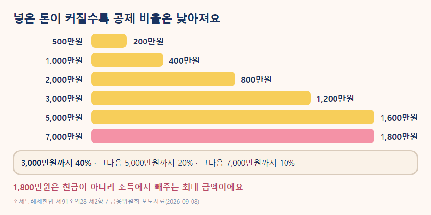
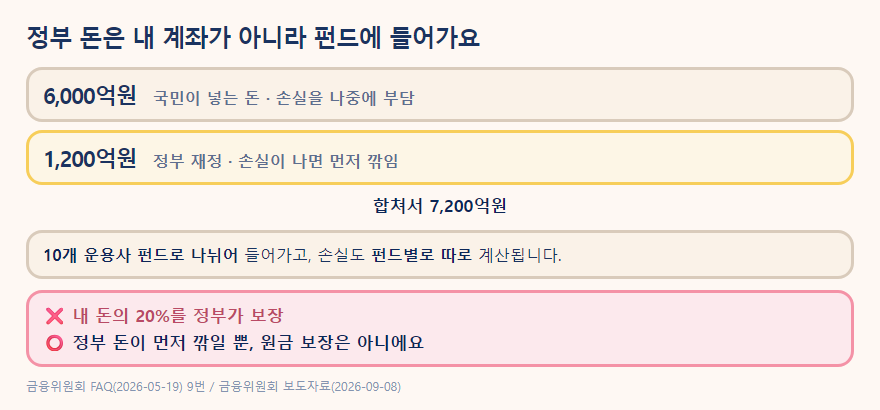

국민참여성장펀드 2차가 2026년 9월 30일부터 10월 15일까지 판매됩니다. 선착순이라 준비된 물량이 다 팔리면 일찍 끝날 수 있어요.
그런데 이름부터 조금 어렵죠. 국민성장펀드가 뭔지, 국민참여성장펀드가 뭔지, 소득공제가 뭔지, 환매가 뭔지 하나도 모른다고 해도 괜찮아요.
이 글은 경제를 잘 아는 사람이 설명하는 글보다, 처음 듣는 사람이 "아, 그래서 이런 뜻이구나" 하고 이해하고 넘어가는 글을 목표로 정리했습니다.
처음 들으면 "정부가 펀드를 하나 만든 건가?" 싶을 수 있어요.
쉽게 말하면 국민성장펀드는 우리나라가 앞으로 성장할 가능성이 큰 산업에 큰 규모의 자금을 공급하기 위해 만든 정책 금융의 큰 틀입니다. 2026년에는 30조원 이상을 지원하는 운용계획이 잡혀 있습니다.
여기에는 정부 자금만 들어가는 것이 아니라 민간자금도 함께 들어가고, 기업에 직접 투자하거나 펀드를 통해 투자하거나, 인프라에 투자하거나, 낮은 금리로 돈을 빌려주는 등 여러 방식이 함께 사용됩니다.
그래서 국민성장펀드와 국민참여성장펀드는 같은 말이 아닙니다. 국민성장펀드가 큰 틀이라면, 국민참여성장펀드는 그 안에서 일반 국민이 직접 가입할 수 있는 상품이라고 이해하면 됩니다.
국민성장펀드 2026년 30조원 이상 지원 목표 및 투자방식 — 금융위원회(2026-09-08) · 금융위원회 보도자료
국민참여성장펀드는 아무 회사에나 투자하는 상품은 아닙니다. 반도체, AI, 바이오, 방산, 로봇, 이차전지 등 첨단전략산업과 관련된 기업에 투자하도록 설계되어 있습니다.
그리고 내가 삼성전자나 AI 회사 하나를 골라서 직접 사는 방식도 아닙니다. 국민이 돈을 모으면 전문 운용사가 여러 자펀드에 나눠 투자하고, 그 자펀드들이 정해진 투자전략에 따라 기업 등에 투자합니다.
"내가 기업을 하나씩 고르는 주식투자"보다는 "전문가에게 돈을 맡겨 여러 관련 투자처에 나눠 투자하는 펀드"에 가깝다고 보면 됩니다.
| 내가 하는 투자 | 누가 투자처를 고르나? | 한 줄로 보면 |
|---|---|---|
| 개별 주식 | 나 | 내가 회사를 골라 직접 투자 |
| 일반 펀드 | 운용사 | 돈을 모아 전문가가 대신 투자 |
| 국민참여성장펀드 | 운용사 | 첨단산업을 중심으로 정해진 투자전략에 따라 운용 |
2차 펀드의 10개 자펀드 분산출자, 첨단전략산업 투자대상 — 금융위원회(2026-09-08) · 투자구조·투자대상 확인
이걸 제일 먼저 봐야 해요. "세금 혜택이 있다"는 말을 듣기 전에 내가 실제로 얼마까지 넣을 수 있는 상품인지부터 알아야 하니까요.
💰 이번 2차 펀드 가입한도
전용계좌: 이번 2차 펀드에 최대 1억원
전용저축 전체 납입한도: 1인당 총 2억원 이내이며, 판매계획상 연간 한도는 1억원
헷갈리기 쉬운 숫자가 셋입니다. 넣을 수 있는 최대는 1억원, 공제 계산에 들어가는 최대는 7,000만원, 소득에서 빼주는 최대는 1,800만원이에요.
여기서 또 하나 헷갈릴 수 있어요. "1억원까지 넣을 수 있는데, 그럼 소득공제도 1억원 전부에 대해 받을 수 있나?" 그건 아닙니다.
소득공제 혜택을 계산할 때 인정되는 투자금액은 최대 7,000만원입니다. 따라서 7,000만원보다 더 넣는다고 소득공제액이 계속 늘어나는 것은 아닙니다.
| 구분 | 한도 | 무슨 뜻? |
|---|---|---|
| 이번 2차 가입한도 | 최대 1억원 | 이번 2차에 넣을 수 있는 최대 금액 |
| 소득공제 대상 투자금액 | 최대 7,000만원 | 소득공제 계산에 반영되는 투자금액의 상한 |
| 최대 소득공제액 | 1,800만원 | 실제 현금 환급액이 아니라 소득에서 공제하는 최대 금액 |
| 일반계좌 | 연 3,000만원 | 세제혜택 없이 가입할 때의 투자한도 |
사회초년생이라면 여기서 1억원이라는 숫자에 너무 집중할 필요는 없습니다. "최대한 많이 넣는 게 이득"인 상품이라는 뜻이 아니기 때문이에요.
오히려 "내가 5년 동안 없어도 되는 돈이 얼마인가?"부터 생각하는 게 순서입니다.
참고로 전용계좌 한도 연 1억원은 1차와 같습니다. 1차와 달라진 것은 한도가 아니라 서민 전용 물량이에요(판매액의 20% → 50%).
전용계좌 연간 1억원·5년간 최대 2억원, 일반계좌 연 3,000만원, 최소한도 판매사별 0~100만원 — 금융위원회(2026-09-08) · 가입한도 확인
아니에요. 여기서부터가 '소득공제'라는 말을 이해할 차례입니다.
소득공제 = 세금을 계산할 때 소득에서 일정 금액을 빼주는 것
"세금을 계산할 때 이 금액은 조금 빼고 계산해 주세요"에 가깝습니다.
예를 들어 1,000만원을 넣었다고 해볼게요. 3,000만원 이하의 투자금액이라면 그중 40%, 즉 400만원이 소득공제에 반영되는 구조입니다.
그렇다고 연말정산에서 400만원이 통장으로 들어오는 것은 아닙니다. 세금을 계산할 때 사용하는 소득을 400만원만큼 낮춰 계산하는 혜택이라고 생각하면 됩니다.
그리고 세금이 실제로 얼마나 줄어드는지는 사람마다 다릅니다. 내 소득 수준, 다른 소득공제와 세액공제, 원래 내던 세금 등에 따라 결과가 달라지기 때문입니다.
📌 이렇게만 기억하세요
1,000만원 투자 → 400만원 현금 환급 ❌
1,000만원 투자 → 세금 계산에서 소득 400만원을 빼주는 혜택 ⭕
이제 비율을 보면 훨씬 이해하기 쉽습니다. 소득공제는 투자금액에 따라 아래처럼 계산됩니다.

여기서 중요한 점은 3,000만원을 넘는 순간 전체 금액에 20%를 곱하는 방식이 아니라는 것입니다. 3,000만원까지는 40%, 3,000만원을 넘고 5,000만원까지인 부분은 20%, 5,000만원을 넘고 7,000만원까지인 부분은 10%를 적용합니다. 그래서 7,000만원을 넣었을 때 최대 소득공제액이 1,800만원이 됩니다.
⚠️ 중요해요. 7,000만원 투자 → 1,800만원 환급이 아닙니다.
1,800만원은 세금을 계산할 때 소득에서 빼주는 최대 금액이에요.
소득공제율 및 공제한도 — 조세특례제한법 제91조의28 제2항, 금융위원회(2026-09-08). 3천만원 이하 40%, 3천만원 초과~5천만원 이하 20%, 5천만원 초과~7천만원 이하 10%, 최대 1,800만원. · 국가법령정보센터
여기서 많은 설명이 갑자기 어려워집니다. "세율이 몇 %니까 얼마를 돌려받습니다"라고 바로 계산해버리기 때문이에요.
하지만 초보자라면 먼저 이것만 알면 됩니다. 소득공제액과 실제로 줄어드는 세금은 같은 금액이 아닙니다.
예를 들어 1,000만원을 넣어 400만원이 소득공제에 반영됐다고 해볼게요. 이 400만원 때문에 세금을 계산하는 기준이 낮아지고, 그 결과 최종적으로 내야 할 세금이 줄어들 수 있습니다. 그런데 정확히 얼마가 줄어드는지는 모든 사람에게 똑같지 않습니다.
따라서 사회초년생에게는 복잡한 세율표부터 외우기보다 작년 원천징수영수증에서 '결정세액'을 먼저 확인해보는 것이 현실적인 출발점입니다.
결정세액이 뭐예요?
연말정산 계산을 다 끝낸 뒤 결국 부담해야 하는 소득세가 얼마였는지를 보여주는 숫자라고 생각하면 됩니다.
결정세액이 거의 없다면, 소득공제를 추가로 받아도 실제 세금 감소 효과가 크지 않을 수 있습니다. 반대로 소득세를 실제로 내고 있다면 소득공제로 얼마나 줄어들 수 있는지 따져볼 의미가 생깁니다.
다만 올해의 연봉과 공제 상황이 작년과 달라졌다면 실제 결과도 달라질 수 있으니, 결정세액은 정확한 환급액을 알려주는 숫자가 아니라 판단을 시작하는 참고자료로 생각하세요.
이것도 단어부터 풀어볼게요.
환매 = 펀드에서 내 돈을 다시 받아오는 것
그래서 환매금지형은 원할 때 펀드에 돈을 돌려달라고 해서 중간에 빠져나오는 것이 제한된 펀드입니다.
국민참여성장펀드는 5년 만기의 환매금지형입니다. 즉, 일반적인 환매 방식으로 중간에 돈을 찾아 나오는 것을 5년 동안 할 수 없습니다.
다만 펀드가 거래소에 상장되면 다른 투자자에게 양도할 수 있는 길은 생길 수 있습니다. 하지만 이것도 "원할 때 꼭 팔린다"는 뜻은 아닙니다. 거래하는 사람이 적으면 실제 거래가 어려울 수 있고, 기준가격보다 낮은 가격에 거래될 가능성도 금융위원회가 안내하고 있습니다.
🏠 생활 속 예시
2년 뒤 전세보증금으로 쓸 2,000만원이 있다고 해볼게요. 그 돈을 이 펀드에 넣었다가 2년 뒤 꼭 필요해진다면 곤란할 수 있습니다. 그래서 이 상품은 "당장 필요하지 않은 여윳돈"을 기준으로 생각하는 게 좋습니다.
5년 만기 환매금지형, 상장 후 양도 가능성과 기준가격보다 낮은 가격 가능성 — 금융위원회(2026-09-08) · 금융위원회 보도자료
5년과 3년은 서로 다른 이야기라서 헷갈립니다.
5년은 이 펀드의 만기와 환매금지 기간에 관한 이야기이고, 3년은 세제혜택을 받은 뒤 너무 일찍 양도·환매하면 혜택을 다시 걷어가는 기준이 되는 기간입니다.
"세금 혜택을 받고 들어왔는데 3년이 되기 전에 나가면, 받았던 혜택을 다시 정산한다"고 이해하면 됩니다.
다시 걷는 금액은 원칙적으로 판 금액의 14%입니다. 다만 실제로 감면받은 세액이 그보다 적다는 걸 증명하면 그 금액만큼만 냅니다.
그리고 사망·해외이주, 또는 팔기 전 6개월 안에 생긴 퇴직·폐업·천재지변·3개월 이상 입원치료가 필요한 병이나 사고 같은 부득이한 사유라면 다시 걷지 않습니다. 그래서 "무조건 14%를 낸다"고 단순화하면 안 됩니다.
3년 이전 양도·환매 시 추징(양도액·환매액 × 14%, 실제 감면세액이 적으면 그 금액) — 조세특례제한법 제91조의28 제5항·제6항 / 부득이한 사유 — 같은 법 시행령 제93조의14 제8항 · 법령 확인
이건 숫자만 보면 가장 오해하기 쉬운 부분입니다. 내가 1,000만원을 넣으면 정부가 200만원까지 보장해준다는 뜻은 아닙니다.
2차 국민참여성장펀드는 국민 자금 6,000억원과 후순위 재정지원 1,200억원을 합쳐 총 7,200억원이 자펀드에 투자되는 구조입니다.
후순위라는 말도 어렵죠. 여기서는 "손실이 생겼을 때 국민 투자금보다 뒤에 있는 재정이 일정 범위에서 먼저 부담하도록 설계된 구조"라고 이해하면 됩니다. 그리고 이 부담은 펀드 전체가 아니라 자펀드별로 따로 계산됩니다.

그래서 정부 재정이 들어간다는 점은 하나의 안전장치이지만, 이 펀드의 원금이 보장된다는 의미는 아닙니다. 금융위원회는 1차 판매 때 이 펀드를 원금이 보장되지 않는 고위험(1등급) 투자상품으로 안내했고, 가입할 때 투자성향 진단에서 이 등급에 맞는다고 나와야 합니다.
⚠️ 원금이 보장되는 상품이 아닙니다.
정부 재정이 후순위로 들어간다고 해서 내 투자금의 20%가 보장되는 것은 아닙니다. 펀드의 투자 결과에 따라 원금보다 적은 돈을 돌려받을 가능성이 있습니다.
후순위 재정 1,200억원 — 금융위원회(2026-09-08) / 개인별 20% 손실보전 아님·자펀드별 후순위·위험등급 1등급 — 금융위원회 FAQ(2026-05-19) 8·9번 · FAQ 보기
여기서 말하는 서민은 막연한 표현이 아니라 정해진 소득 기준으로 구분합니다. 이번 2차에서는 서민형 ISA의 기준과 같은 기준을 적용합니다.
이번 2차의 서민 기준
근로소득만 있는 경우 → 근로소득 5,000만원 이하
근로소득 외에 종합소득이 있는 경우 → 종합소득 3,800만원 이하
그렇다면 "서민은 돈을 더 많이 받을 수 있다"는 뜻일까요? 그건 아닙니다.
이번 2차 펀드의 판매액 6,000억원 가운데 첫 주에는 3,000억원을 이 기준에 해당하는 사람에게 배정합니다. 첫 주 안에 서민 물량이 다 팔리지 않으면 2주차에는 서민·일반 구분 없이 판매합니다.
즉, "나는 서민인가?"가 궁금하다면 내 소득이 이 기준에 들어가는지를 확인하면 됩니다.
서민 기준 및 첫 주 50%·3,000억원 배정 — 금융위원회 보도자료(2026-09-08) · 카드뉴스(2026-09-11) · 보도자료 · 카드뉴스
여기서 전용계좌라는 말이 다시 나옵니다. 이건 말 그대로 국민참여성장펀드에 투자하기 위한 전용 계좌라고 생각하면 됩니다.
세금 혜택을 받으려면 이 전용계좌를 통해 가입해야 합니다. 반대로 세금 혜택이 필요하지 않다면 일반계좌로도 가입할 수 있지만, 일반계좌에서는 소득공제와 9.9% 분리과세 혜택을 받을 수 없습니다.
또 전용계좌는 아무나 만들 수 있는 것은 아닙니다. 원칙적으로 가입일 기준 19세 이상이거나, 15세 이상이면서 직전 과세기간에 근로소득이 있는 경우 등 법에서 정한 요건을 충족해야 합니다. 또 2023~2025년 중 한 번이라도 금융소득종합과세 대상자였다면 전용계좌 가입이 제한됩니다.
사회초년생이라면 제한 조건에 해당하지 않는 경우가 많겠지만, 개인별 상황이 다를 수 있으니 실제 가입할 때 금융회사에서 확인하는 게 가장 안전합니다.
가입 연령 — 조세특례제한법 제91조의28 제1항제1호 / 일반계좌·금융소득종합과세자 제한 — 금융위원회(2026-09-08) · 금융위원회 보도자료
그래서 가입을 고민한다면, 작년 원천징수영수증에서 '결정세액'부터 확인해보세요.
예를 들어 연봉 3,500만원인 직장인이라면?
연봉만 보고 "소득공제를 얼마나 받겠다"고 바로 계산할 수는 없어요. 실제로는 근로소득공제와 다른 공제·세액공제를 거쳐 결정세액이 정해지기 때문입니다.
그래서 연봉보다 먼저 작년 원천징수영수증의 결정세액을 확인하는 게 더 정확합니다.
여기서는 "몇 천만원 넣으세요"라고 정답을 정하기 어렵습니다. 사람마다 월급, 비상금, 전세 계획, 결혼 계획, 기존 투자금이 모두 다르기 때문이에요.
그래서 한도를 거꾸로 생각해보는 방법이 도움이 됩니다.
예를 들어 이런 사람이 있다고 해볼게요.
• 회사에 입사한 지 2년
• 비상금 500만원
• 2년 뒤 전세자금으로 2,000만원이 필요할 예정
• 투자 경험은 거의 없음
이 사람에게 "소득공제 최대한 받으려면 3,000만원 넣으세요"라고 말하는 건 적절하지 않을 수 있습니다. 2년 뒤 필요한 돈까지 투자해버리면 세금 혜택보다 돈을 쓸 수 없는 문제가 더 커질 수 있기 때문입니다.
반대로 비상금과 단기 목적자금을 따로 마련했고, 몇 년 동안 사용하지 않아도 되는 여윳돈이 있다면 그때부터 이 상품의 세제혜택과 투자위험을 비교해볼 수 있습니다.
Q. 이번 2차에는 얼마까지 넣을 수 있나요?
A. 전용계좌로 이번 2차 펀드에는 최대 1억원까지 가입할 수 있습니다. 전용저축 전체 납입한도는 1인당 2억원 이내이며 판매계획상 연간 한도는 1억원입니다. 일반계좌는 연 3,000만원 한도입니다.
Q. 7,000만원을 넣으면 1,800만원을 돌려받나요?
A. 아닙니다. 1,800만원은 최대 소득공제액입니다. 현금으로 1,800만원을 받는다는 뜻이 아닙니다.
Q. 매달 조금씩 넣을 수 있나요?
A. 아닙니다. 가입할 때 한 번에 넣는 방식입니다. 최소 가입금액은 판매사가 0원~100만원 범위에서 자율적으로 정할 수 있습니다.
Q. 5년 동안 정말 돈을 못 빼나요?
A. 일반적인 환매는 5년 동안 불가능합니다. 다만 상장 후 양도할 수 있는 길은 있고, 그 경우에도 실제 거래 여부와 가격을 보장하지는 않습니다. 3년 안에 팔면 받은 세금 혜택을 다시 걷어갑니다.
Q. 정부가 손실 20%를 보장하나요?
A. 아닙니다. 후순위 재정이 자펀드별로 손실을 먼저 부담하도록 설계된 부분이 있지만, 개인 투자금의 20% 원금을 보장하는 구조는 아닙니다.
Q. 1차 때 계좌만 만들었는데 2차도 가입할 수 있나요?
A. 실제로 투자하지 않았다면 가입할 수 있습니다. 1차 펀드에 실제 투자했다면 2차 가입이 제한되고, 계좌만 만들고 돈을 넣지 않았다면 2차 가입이 가능합니다.
국민참여성장펀드 2차를 한마디로 정리하면, "첨단산업에 투자하면서 세금 혜택도 받을 수 있지만, 5년 동안 환매할 수 없고 원금이 보장되지 않는 투자상품"입니다.
따라서 사회초년생이라면 "세금 혜택이 크다니까 최대한 많이 넣자"보다는, 먼저 결정세액을 확인하고, 생활에 필요한 돈을 남겨둔 뒤, 정말 5년 동안 없어도 되는 돈만 투자 대상으로 생각하는 것이 순서입니다.
🔎 소득공제 때문에 가입하려는 분이라면
결정세액이 0원에 가깝다면 소득공제를 이유로 가입할 필요는 크지 않습니다. 투자상품은 세금 혜택보다 먼저 '내가 이 투자위험을 감당할 수 있는가'를 봐야 하기 때문입니다.
그리고 소득공제는 내가 넣은 돈을 그대로 돌려받는 혜택이 아니라 세금을 계산할 때 유리하게 만들어주는 혜택이라는 것까지 기억하면, 이 상품을 볼 때 가장 중요한 첫걸음은 끝입니다.
오늘의 재테크 한 줄 정리
결정세액을 먼저 보고 → 5년 동안 안 써도 되는 돈인지 확인하고 → 원금 손실을 감당할 수 있을 때 세금 혜택을 계산해보세요.